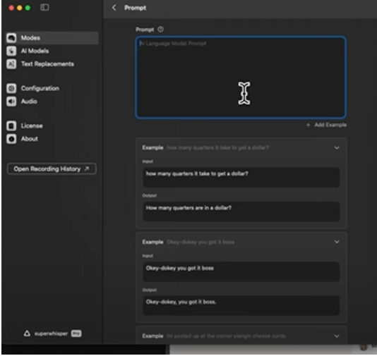

Sending Outreach on Linkedin
Introduction
The most likely reason why you have been brought here is to probably see how a messaging mode can write something very important as an outreach on Linkedin.
Well, writing Linkedin Outreaches can be a tedious task.
Something like an outreach should not take up much of your time on a job networking platform.
So, to save your time below is how you can set up a messaging mode to create your outreaches by using your voice.
Steps

Try it Yourself
[Give some scenario].
Open up a chat with someone on Linkedin and write the appropriate outreach.
Once again, do not send it to someone.